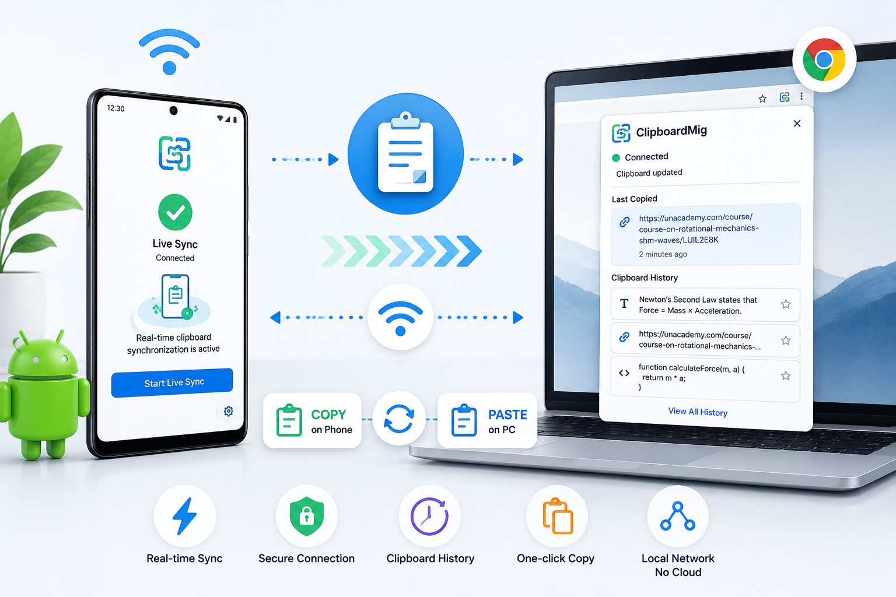

ClipboardMIG
Real-time cross-device clipboard sync system using Android, WebSockets, and a Chrome Extension with automatic clipboard transfer and history management.

How To Use?
- Install the ClipboardMig Chrome Extension in Google Chrome on your PC.
- Open the extension and keep the generated WebSocket URL ready.
- Install the ClipboardMig Android app on your phone.
- Make sure your phone and PC are connected to the same Wi-Fi network.
- Paste the WebSocket URL from the Chrome extension into the Android app.
- Tap Start Capture to enable clipboard capture and synchronization.
- Copy any text on your Android phone to sync it to your PC clipboard.
- Paste the synced text anywhere on your computer using Ctrl + V.
- Open the Chrome extension anytime to view recently copied clipboard history.
- Click any saved clipboard item in the extension to restore it to your PC clipboard.
wanna contribute to this project?
reach me : anubhavm1234@gmail.com